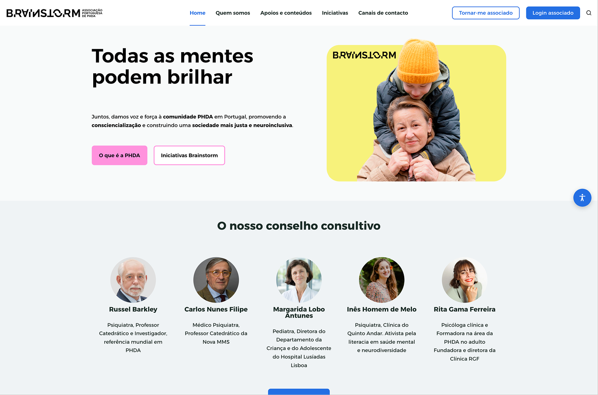

Selected Work

Academia Portugal Digital
Empowering a nation to build digital skills through an accessible, personalised learning experience designed for everyone.
Public Sector Education Accessibility Digital Transformation
Read case study →
Brainstorm PHDA
Giving voice, support and visibility to neurodiversity through an inclusive platform built for and by the ADHD community.
Health Care Accessibility
Read case study →